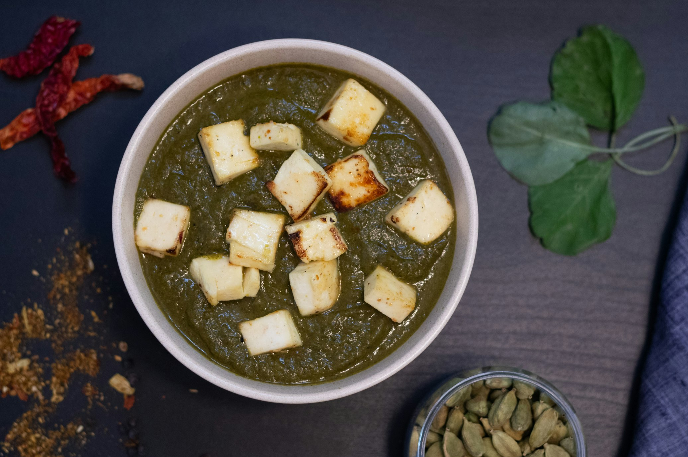

Palak Paneer
Palak Paneer is a popular North Indian dish featuring soft paneer
cheese cooked in a creamy spinach gravy. The spinach is puréed and
seasoned with spices like cumin, coriander, turmeric, and garam
masala, along with garlic, ginger, onions, and tomatoes for added
depth. This vibrant green dish is often finished with a splash of
cream and is typically enjoyed with naan, roti, or rice. Known for
its nutritional benefits, Palak Paneer combines the mildness of
paneer with the rich, earthy flavor of spinach, offering a delicious
and wholesome vegetarian meal.